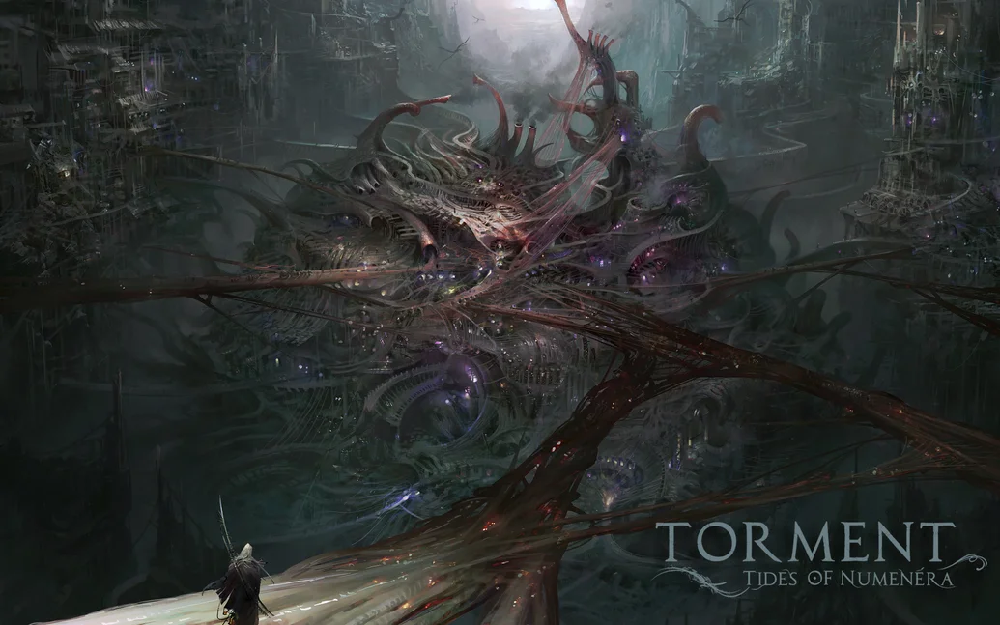

Platform: Tools Used: Duration: Game Type: Role:
|
Overview |
Dark Fathom
This level turned out to be a challenge in optimization. The floor was a procedurally generated mesh coded by one of our fractal enthusiasts. It ran poorly on low end PCs and abysmally on low end Macs. After some profiling I zeroed in on two culprits: object instantiation and array resizing. It turned out that relying on built-in arrays to dynamically resize themselves resulted in CPU intensive garbage collection. This was a problem we would later revisit with several convenience libraries such as LINQ. The solution was a combination of object caching and proper memory allocation during initialization. As a result we achieved great FPS even on a cheap Mac Mini.
In addition to hunting for memory leaks, and reducing garbage collection stutters, I also assisted with our culling system to control CPU load in scenes with a large number of NPCs. I also worked to eliminate the performance hits from Unity's FindObjectsOfType by caching frequently accessed data such as our combatant components.
Reef of Fallen Worlds
This level had one of the game's earliest "Crisis", the term used for high-stakes events such as combats, and I was tasked with two important combat elements - abilities and camera framing. I created a queue-based solution that let our camera smoothly follow characters and projectiles and handled actions that could resolve into additional secondary actions.
I created many interesting abilities such as usable turrets with conal sprays, teleportation, and chain-hook pulls and pushes. For these abilities I worked closely with our VFX artists. This led me to revamp our VFX management system to make it easier for our artists to specify effects that could apply at the start or end of abilities, and assign variable durations and visual priority.
Anechoic Lazaret
This level demonstrated my solution to a problem that resulted from inheriting Obsidian's fog of war (FOW) system. Their system started to struggle with some of our complex layouts and it was too late and risky to attempt to modify that system. I created triggers that could hook up to one or multiple revealers. These revealers allowed designers to force the FOW to clear up in areas where line of sight checks were not producing optimal results.
I always went out of my way to make life easier for our designers. Whenever I noticed they were doing something tedious or spending a lot of time trying to fix a problem, I would jump in and lend a hand. In one instance I discovered that they were adding a prefab to each scene to display a screen-covering wavy VFX that played when the PC was experiencing a memory, and that they were using a script which referenced that scene specific prefab. I streamlined that process by making a global VFX system which provided designers with simple "Activate/Deactivate Memory VFX" functions.